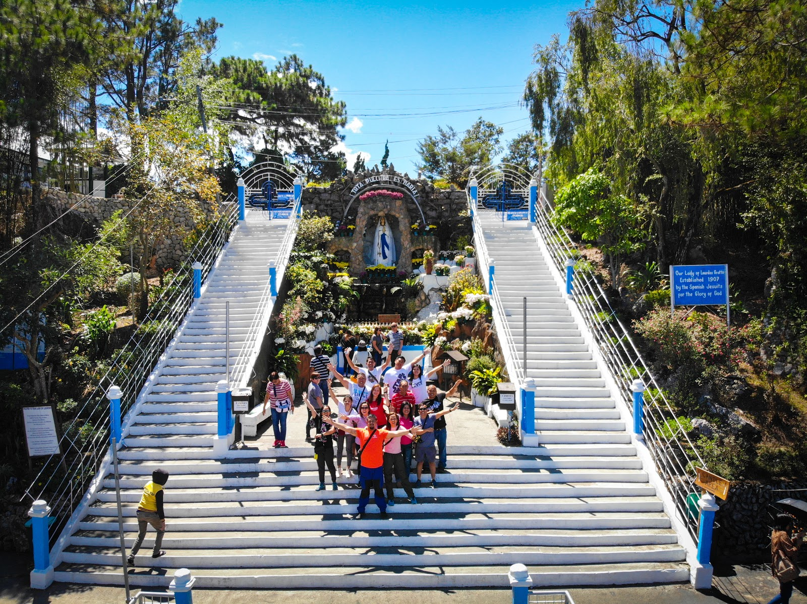

About Lourdes Grotto
The Our Lady of Lourdes Grotto is one of Baguio City’s most iconic religious landmarks. Devotees climb the 252 steps to reach the image of the Blessed Virgin Mary, symbolizing sacrifice and devotion. From the top, visitors can enjoy a calm atmosphere and scenic hilltop views.
Nearby Attractions
- 🏰 Dominican Hill & Diplomat Hotel
- 🌄 Mirador Heritage & Eco-Spiritual Center
- 🎋 Arashiyama Bamboo Grove
- ☕ Cafés along Mirador Hill
- 🎨 BenCab Museum (10 mins)
Map Location
The map below shows the exact location of the grotto and the surrounding hilltop area.